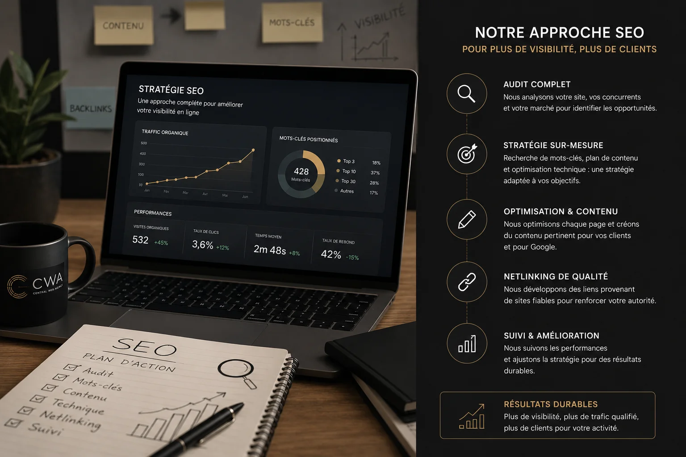

Le SEO local, c'est l'art d'apparaître dans les résultats Google quand quelqu'un cherche un professionnel près de chez lui. Pour un artisan, un coiffeur, un coach ou une esthéticienne, c'est souvent le canal d'acquisition le plus rentable qui soit. Et contrairement à la publicité payante, les résultats durent dans le temps.
Qu'est-ce que le SEO local exactement ?
Le SEO (Search Engine Optimization) local désigne l'ensemble des techniques qui permettent à un site web d'apparaître en bonne position sur Google pour des recherches liées à une zone géographique précise. Quand quelqu'un tape "plombier Vienne", "coiffeur Lyon 6" ou "coach sportif Bourgoin-Jallieu", Google affiche en priorité les professionnels de cette zone dont le site et la fiche Google sont bien optimisés.
Il existe deux types de résultats locaux : le Pack Local (la carte Google Maps avec les trois fiches qui apparaissent en haut) et les résultats organiques classiques en dessous. Bien travailler son SEO local, c'est viser les deux.
Le fondement : un site web bien structuré
Tout commence par le site. Sans site, pas de SEO. Et avec un mauvais site, les efforts sont limités. Voici ce que Google regarde en priorité.
La vitesse de chargement
Google pénalise les sites lents. Un site qui met plus de 3 secondes à charger perd des positions dans les résultats, en plus de faire fuir les visiteurs. Chez Central Web Agency, nos sites chargent en moins d'une seconde grâce à du code pur sans base de données ni CMS lourd. C'est une base indispensable.
L'optimisation mobile
Plus de 70% des recherches locales se font depuis un smartphone. Google indexe en priorité la version mobile de votre site. Si votre site n'est pas responsive, vous êtes pénalisé avant même de commencer.
Les balises et la structure
Chaque page de votre site doit avoir un titre clair (balise H1), une description meta pertinente, et du contenu qui mentionne naturellement votre activité et votre zone géographique. Ce n'est pas du bourrage de mots-clés, c'est de la clarté pour Google et pour vos visiteurs.
Google Business Profile : votre vitrine locale la plus puissante
C'est gratuit, c'est puissant, et la majorité des indépendants ne l'optimisent pas correctement. Google Business Profile (anciennement Google My Business) est la fiche qui apparaît sur Google Maps et dans le Pack Local.
Pour l'optimiser efficacement :
- Remplissez absolument tout : nom exact, adresse, téléphone, horaires, site web, description. Une fiche incomplète est une fiche invisible.
- Choisissez la bonne catégorie principale : c'est elle qui détermine sur quelles requêtes vous apparaissez.
- Ajoutez des photos régulièrement : les fiches avec photos génèrent bien plus de clics. Mettez vos réalisations, votre espace de travail, votre équipe.
- Publiez des Google Posts : des actualités, promotions, nouveautés directement sur votre fiche. Google valorise les fiches actives.
- Répondez aux avis : tous, positifs comme négatifs. Une réponse professionnelle à un avis négatif rassure autant qu'un avis positif.
Les avis Google : le levier le plus sous-estimé
Le nombre et la qualité de vos avis Google influencent directement votre position dans le Pack Local. Un professionnel avec 50 avis à 4,8 étoiles apparaîtra presque toujours avant un concurrent avec 5 avis à 5 étoiles, même si ce dernier a un meilleur site.
Comment obtenir des avis facilement : après chaque prestation réussie, envoyez un message simple à votre client avec le lien direct vers votre fiche Google. La plupart des gens sont ravis de laisser un avis si on leur simplifie la démarche. Ne demandez pas à vos proches de laisser de faux avis, Google détecte les comportements suspects et peut pénaliser votre fiche.
Les mots-clés locaux : cibler les bonnes requêtes
Un mot-clé local, c'est la combinaison de votre activité et d'une zone géographique. "Electricien Lyon", "salon de coiffure Vienne", "coach nutrition Bron". Ces requêtes sont moins concurrentielles que les requêtes nationales et convertissent mieux parce que la personne cherche quelqu'un près de chez elle.
La bonne stratégie est de cibler à la fois votre ville principale et les villes autour. Un artisan basé à Heyrieux gagnera à mentionner aussi Vienne, Bourgoin-Jallieu, Saint-Quentin-Fallavier ou Grenoble selon sa zone d'intervention réelle. Chaque mention géographique pertinente élargit votre visibilité.
Le SEO local ne demande pas un budget publicitaire. Il demande de la rigueur, de la constance et un site bien construit.
Les backlinks locaux : faites parler de vous
Un backlink, c'est un lien vers votre site depuis un autre site. Plus ces liens viennent de sources locales et pertinentes, plus Google considère votre site comme une référence dans votre zone.
Pour un indépendant, les sources de backlinks locaux les plus accessibles :
- Les annuaires locaux et professionnels : Pages Jaunes, Yelp, Hoodspot, Mappy, Cylex
- Les chambres de commerce et associations professionnelles de votre secteur
- Les partenariats avec d'autres professionnels locaux complémentaires
- La presse locale en ligne si vous avez une actualité à partager
Le contenu régulier : montrez que vous êtes actif
Google valorise les sites qui publient régulièrement du contenu utile. Un blog avec des articles ciblés sur votre activité et votre région est l'un des meilleurs moyens de gagner des positions au fil du temps. Ce n'est pas obligatoire pour démarrer, mais c'est un accélérateur puissant sur le long terme.
Chaque article bien écrit sur un sujet que vos clients potentiels cherchent est une nouvelle porte d'entrée vers votre site. Un coiffeur à Lyon qui publie un article sur "comment choisir sa couleur de cheveux selon son teint" va attirer des lectrices lyonnaises qui ne le connaissaient pas.
Comment Central Web Agency intègre le SEO dans chaque site
Le SEO n'est pas une option qu'on ajoute après coup chez nous. C'est intégré dès la conception de chaque site. Structure HTML propre, balises optimisées, vitesse de chargement maximale, données structurées Schema.org, balises géographiques, canonical propres.
Nous travaillons avec les professionnels de Lyon, Vienne, Bourgoin-Jallieu, Heyrieux et de toute la région Auvergne-Rhône-Alpes, mais aussi dans toute la France. Chaque site est optimisé pour la zone géographique d'intervention réelle du client.
Le résultat est vérifiable : nos sites obtiennent des scores supérieurs à 90/100 sur Google PageSpeed Insights et sont indexés rapidement par Google grâce à leur structure propre et leur temps de chargement optimisé.